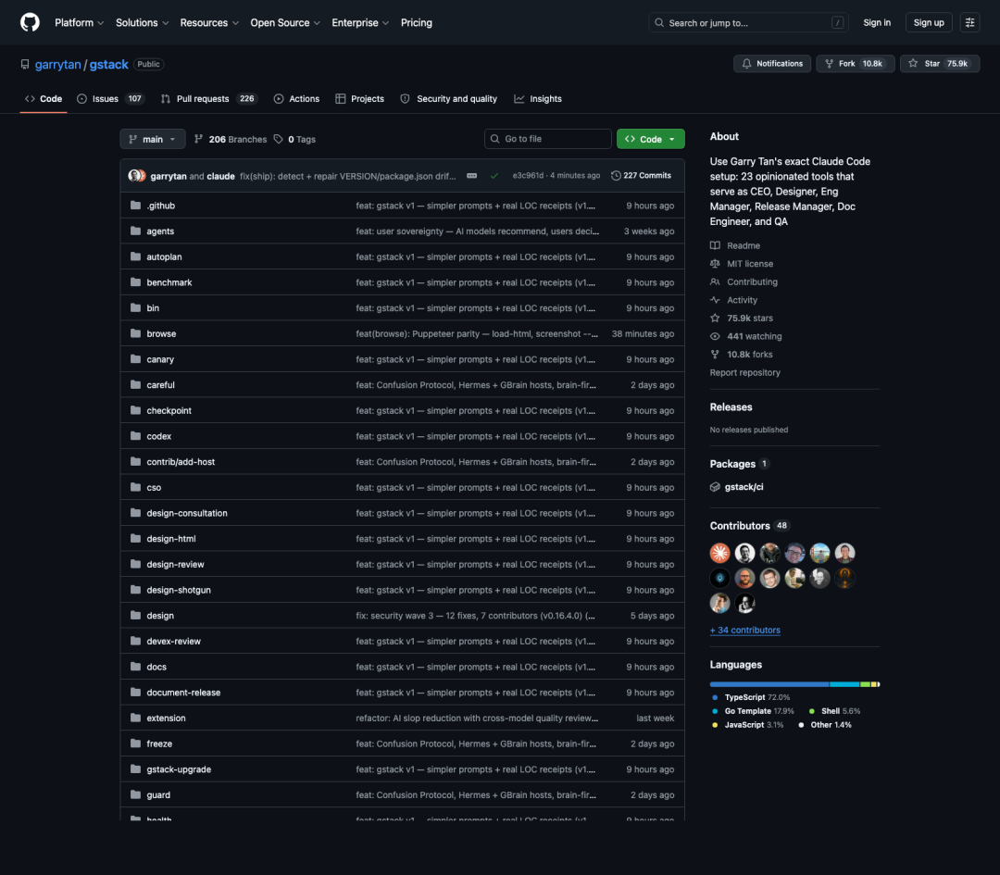
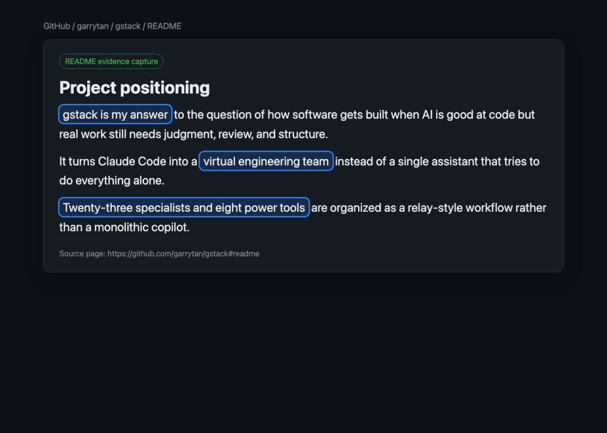
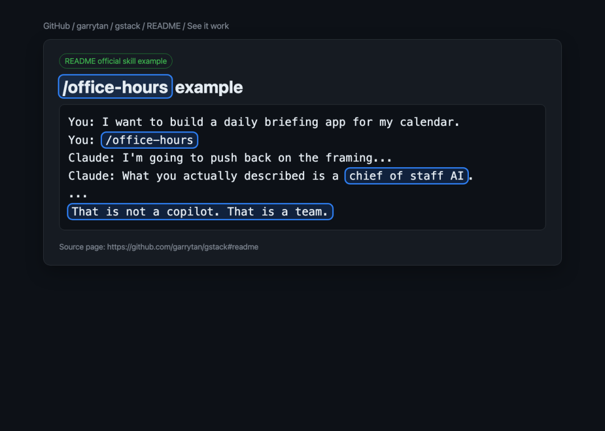

通用 AI 写小 demo 很顺,一到复杂开发就常常失真。问题往往不在模型不够强,而在你把判断、规划、实现、审查全压给了同一个助手。
Garry Tan 个人 GitHub 上的 gstack,给了一个更像"工程组织"而不是"聊天工具"的解法。它在 README 里的官方定位是:把 Claude Code 变成一个虚拟工程团队。

这套系统最值得看,不是因为它又多了几个 Agent 角色,而是它把软件开发拆成了一条可分工、可接力、可复审的 AI 流水线。3 月 README 曾写成 15 个 specialists,当前版本已扩展到 23 个;数字不是重点,重点是先分工,再开工。

比如官方提供的 /office-hours，不会一上来就让 AI 写代码，而是先追问：目标用户是谁、真实痛点是什么、这周最小可收费版本是什么。先把问题定义掰正，再进入 CEO review、工程评审、设计审视、QA、发布等后续环节，本质上是在减少"需求没想清楚，代码先写一堆"的返工。

所以 gstack 值得关注,不是它又造了一个更强的 Agent,而是它把复杂开发真正缺的东西说透了:不是单体 AI 更聪明,而是工作流更像团队协作。
#AI智能体# #ClaudeCode# #软件开发# #开发工作流# #开源项目#